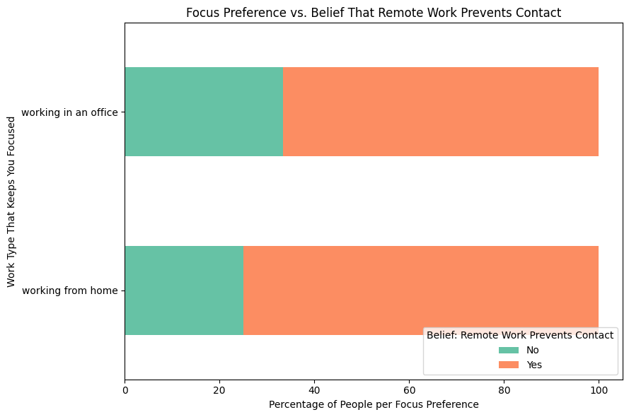
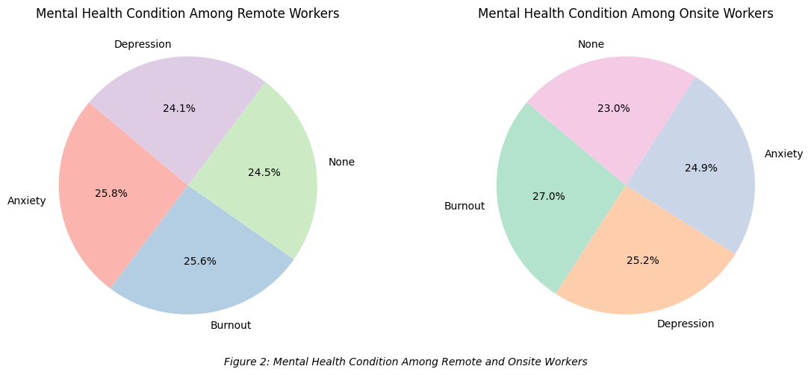
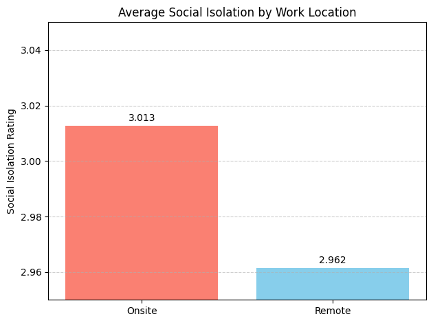
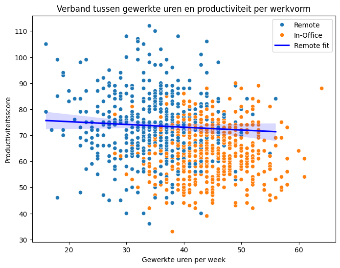
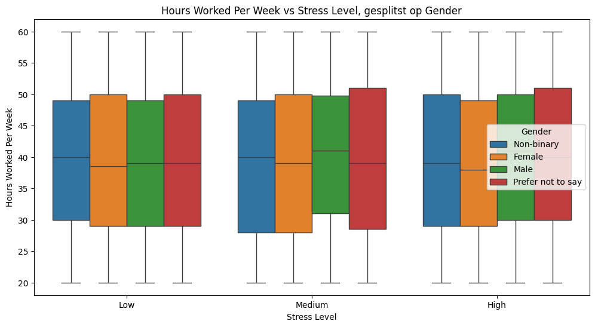
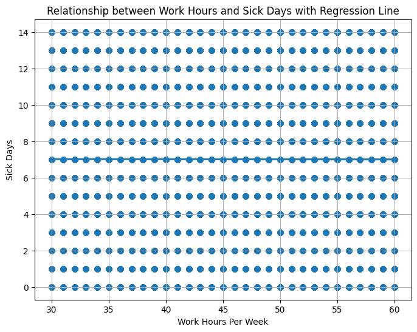
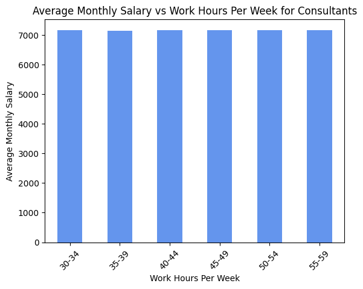
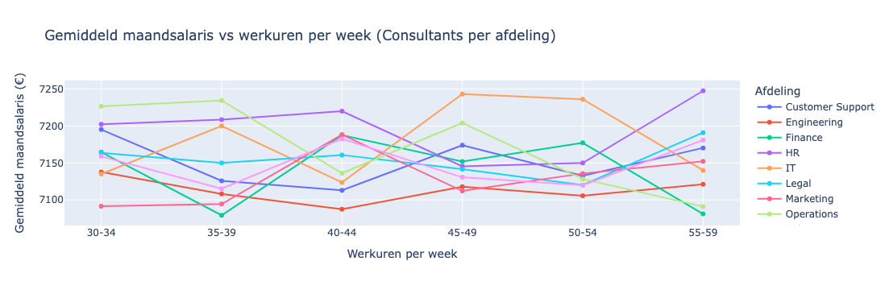
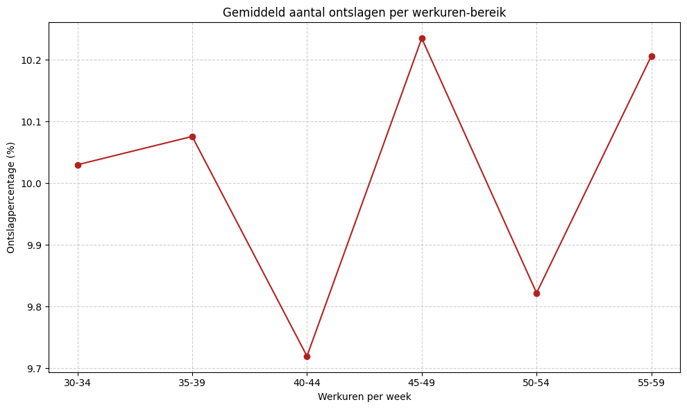

import pandas as pd
import matplotlib.pyplot as plt
from statsmodels.graphics.mosaicplot import mosaic
df = pd.read_csv('The Impacts of Working Remotely and in an Office Survey.csv')
# Clean and standardize the two relevant columns
df['focus'] = df['Which work type keeps you focused while working?'].str.strip().str.lower()
df['prevents_contact'] = df['Do you think that working from home prevents you from getting in contact with people?'].str.strip().str.lower()
# Filter out rows with missing data in either column
df_clean = df.dropna(subset=['focus', 'prevents_contact'])
df_clean['focus'] = df_clean['focus'].replace({
'remote work': 'Remote Work Focus',
'office work': 'Office Work Focus',
'hybrid work': 'Hybrid Work Focus'
})
crosstab = pd.crosstab(df_clean['focus'], df_clean['prevents_contact'], normalize='index') * 100
crosstab.plot(kind='barh', stacked=True, figsize=(9,6), color=['#66c2a5','#fc8d62'])
plt.title('Focus Preference vs. Belief That Remote Work Prevents Contact')
plt.xlabel('Percentage of People per Focus Preference')
plt.ylabel('Work Type That Keeps You Focused')
plt.legend(title='Belief: Remote Work Prevents Contact', labels=['No', 'Yes'], loc='lower right')
plt.tight_layout()
plt.show()

import pandas as pd
import matplotlib.pyplot as plt
# Load the dataset
df = pd.read_csv('Impact_of_Remote_Work_on_Mental_Health.csv')
print(df['Mental_Health_Condition'].value_counts(dropna=False))
Mental_Health_Condition
Burnout 1280
Anxiety 1278
Depression 1246
NaN 1196
Name: count, dtype: int64
import pandas as pd
import matplotlib.pyplot as plt
# Load the dataset
df = pd.read_csv('Impact_of_Remote_Work_on_Mental_Health.csv')
# Optional: clean column names and values
df.columns = df.columns.str.strip()
df['Work_Location'] = df['Work_Location'].str.strip().str.capitalize() # Normalize casing
# Replace NaN in Mental_Health_Condition with 'None'
df['Mental_Health_Condition'] = df['Mental_Health_Condition'].fillna('None')
# Create subsets
remote = df[df['Work_Location'] == 'Remote']
onsite = df[df['Work_Location'] == 'Onsite'] # Updated from 'Office' to 'Onsite'
# Count mental health condition distribution for each group, now including 'None'
remote_mh = remote['Mental_Health_Condition'].value_counts()
onsite_mh = onsite['Mental_Health_Condition'].value_counts()
# Plot pie charts
plt.figure(figsize=(12, 5))
plt.subplot(1, 2, 1)
plt.pie(remote_mh, labels=remote_mh.index, autopct='%1.1f%%', startangle=140, colors=plt.cm.Pastel1.colors)
plt.title('Mental Health Condition Among Remote Workers')
plt.subplot(1, 2, 2)
plt.pie(onsite_mh, labels=onsite_mh.index, autopct='%1.1f%%', startangle=140, colors=plt.cm.Pastel2.colors)
plt.title('Mental Health Condition Among Onsite Workers')
plt.figtext(0.5, 0.01, "Figure 2: Mental Health Condition Among Remote and Onsite Workers", ha='center', fontsize=10, style='italic')
plt.tight_layout(rect=[0, 0.03, 1, 1]) # Leave space at the bottom for the caption
plt.show()

This shows that people who work remote have slightly less mental conditions
# Define the desired order
desired_order = ['High', 'Medium', 'Low']
# Reindex the crosstab to that order (it will put NaN if some level missing)
stress_dist = stress_dist.reindex(desired_order)
# Now plot as before
stress_dist.plot(kind='bar', figsize=(8,6), color=['#66c2a5', '#fc8d62'])
plt.title('Stress Level Distribution: Remote vs Onsite Workers')
plt.ylabel('Percentage of Workers')
plt.xlabel('Stress Level')
plt.xticks(rotation=0)
plt.legend(title='Work Location', loc='center left', bbox_to_anchor=(1, 0.5))
plt.tight_layout(rect=[0, 0, 1, 1])
plt.show()
---------------------------------------------------------------------------
NameError Traceback (most recent call last)
Cell In[4], line 5
2 desired_order = ['High', 'Medium', 'Low']
4 # Reindex the crosstab to that order (it will put NaN if some level missing)
----> 5 stress_dist = stress_dist.reindex(desired_order)
7 # Now plot as before
8 stress_dist.plot(kind='bar', figsize=(8,6), color=['#66c2a5', '#fc8d62'])
NameError: name 'stress_dist' is not defined
This shows that workers who work remote have slightly higher stress levels than the workers onsite
import matplotlib.pyplot as plt
avg_isolation = {
'Onsite': 3.0128,
'Remote': 2.9615
}
plt.bar(avg_isolation.keys(), avg_isolation.values(), color=['salmon', 'skyblue'])
plt.title('Average Social Isolation by Work Location')
plt.ylabel('Social Isolation Rating')
# Zoom in on y-axis to highlight the small difference
plt.ylim(2.95, 3.05) # Focusing on the narrow range
# Add exact values on top of bars
for i, (label, value) in enumerate(avg_isolation.items()):
plt.text(i, value + 0.001, f"{value:.3f}", ha='center', va='bottom', fontsize=10)
plt.grid(axis='y', linestyle='--', alpha=0.6)
plt.tight_layout()
plt.show()

data = pd.read_csv('Impact_of_Remote_Work_on_Mental_Health.csv')
Perspectief 2
import pandas as pd
import seaborn as sns
import matplotlib.pyplot as plt
data = pd.read_csv('Impact_of_Remote_Work_on_Mental_Health.csv')
# Filter mensen met mentale gezondheidsconditie
data_mental = data[data['Mental_Health_Condition'].notnull() & (data['Mental_Health_Condition'] != '')]
# Gemiddelde productiviteitsverandering per werkplek
mean_prod = data_mental.groupby('Work_Location')['Productivity_Change'].mean()
print(mean_prod)
# Visualisatie
sns.boxplot(data=data_mental, x='Work_Location', y='Productivity_Change')
plt.title('Productiviteitsverandering per werkplek (met mentale gezondheidscondities)')
plt.show()
---------------------------------------------------------------------------
TypeError Traceback (most recent call last)
File /opt/anaconda3/lib/python3.12/site-packages/pandas/core/groupby/groupby.py:1942, in GroupBy._agg_py_fallback(self, how, values, ndim, alt)
1941 try:
-> 1942 res_values = self._grouper.agg_series(ser, alt, preserve_dtype=True)
1943 except Exception as err:
File /opt/anaconda3/lib/python3.12/site-packages/pandas/core/groupby/ops.py:864, in BaseGrouper.agg_series(self, obj, func, preserve_dtype)
862 preserve_dtype = True
--> 864 result = self._aggregate_series_pure_python(obj, func)
866 npvalues = lib.maybe_convert_objects(result, try_float=False)
File /opt/anaconda3/lib/python3.12/site-packages/pandas/core/groupby/ops.py:885, in BaseGrouper._aggregate_series_pure_python(self, obj, func)
884 for i, group in enumerate(splitter):
--> 885 res = func(group)
886 res = extract_result(res)
File /opt/anaconda3/lib/python3.12/site-packages/pandas/core/groupby/groupby.py:2454, in GroupBy.mean.<locals>.<lambda>(x)
2451 else:
2452 result = self._cython_agg_general(
2453 "mean",
-> 2454 alt=lambda x: Series(x, copy=False).mean(numeric_only=numeric_only),
2455 numeric_only=numeric_only,
2456 )
2457 return result.__finalize__(self.obj, method="groupby")
File /opt/anaconda3/lib/python3.12/site-packages/pandas/core/series.py:6560, in Series.mean(self, axis, skipna, numeric_only, **kwargs)
6552 @doc(make_doc("mean", ndim=1))
6553 def mean(
6554 self,
(...)
6558 **kwargs,
6559 ):
-> 6560 return NDFrame.mean(self, axis, skipna, numeric_only, **kwargs)
File /opt/anaconda3/lib/python3.12/site-packages/pandas/core/generic.py:12439, in NDFrame.mean(self, axis, skipna, numeric_only, **kwargs)
12432 def mean(
12433 self,
12434 axis: Axis | None = 0,
(...)
12437 **kwargs,
12438 ) -> Series | float:
> 12439 return self._stat_function(
12440 "mean", nanops.nanmean, axis, skipna, numeric_only, **kwargs
12441 )
File /opt/anaconda3/lib/python3.12/site-packages/pandas/core/generic.py:12396, in NDFrame._stat_function(self, name, func, axis, skipna, numeric_only, **kwargs)
12394 validate_bool_kwarg(skipna, "skipna", none_allowed=False)
> 12396 return self._reduce(
12397 func, name=name, axis=axis, skipna=skipna, numeric_only=numeric_only
12398 )
File /opt/anaconda3/lib/python3.12/site-packages/pandas/core/series.py:6468, in Series._reduce(self, op, name, axis, skipna, numeric_only, filter_type, **kwds)
6464 raise TypeError(
6465 f"Series.{name} does not allow {kwd_name}={numeric_only} "
6466 "with non-numeric dtypes."
6467 )
-> 6468 return op(delegate, skipna=skipna, **kwds)
File /opt/anaconda3/lib/python3.12/site-packages/pandas/core/nanops.py:147, in bottleneck_switch.__call__.<locals>.f(values, axis, skipna, **kwds)
146 else:
--> 147 result = alt(values, axis=axis, skipna=skipna, **kwds)
149 return result
File /opt/anaconda3/lib/python3.12/site-packages/pandas/core/nanops.py:404, in _datetimelike_compat.<locals>.new_func(values, axis, skipna, mask, **kwargs)
402 mask = isna(values)
--> 404 result = func(values, axis=axis, skipna=skipna, mask=mask, **kwargs)
406 if datetimelike:
File /opt/anaconda3/lib/python3.12/site-packages/pandas/core/nanops.py:720, in nanmean(values, axis, skipna, mask)
719 the_sum = values.sum(axis, dtype=dtype_sum)
--> 720 the_sum = _ensure_numeric(the_sum)
722 if axis is not None and getattr(the_sum, "ndim", False):
File /opt/anaconda3/lib/python3.12/site-packages/pandas/core/nanops.py:1701, in _ensure_numeric(x)
1699 if isinstance(x, str):
1700 # GH#44008, GH#36703 avoid casting e.g. strings to numeric
-> 1701 raise TypeError(f"Could not convert string '{x}' to numeric")
1702 try:
TypeError: Could not convert string 'DecreaseNo ChangeDecreaseDecreaseIncreaseDecreaseNo ChangeDecreaseIncreaseNo ChangeNo ChangeNo ChangeIncreaseDecreaseNo ChangeDecreaseIncreaseIncreaseNo ChangeIncreaseDecreaseIncreaseIncreaseNo ChangeIncreaseDecreaseDecreaseIncreaseIncreaseNo ChangeIncreaseDecreaseDecreaseIncreaseIncreaseNo ChangeDecreaseIncreaseIncreaseIncreaseNo ChangeNo ChangeDecreaseDecreaseNo ChangeNo ChangeIncreaseDecreaseNo ChangeNo ChangeDecreaseNo ChangeDecreaseDecreaseDecreaseDecreaseIncreaseIncreaseNo ChangeIncreaseDecreaseDecreaseDecreaseDecreaseDecreaseIncreaseNo ChangeDecreaseNo ChangeNo ChangeDecreaseDecreaseDecreaseIncreaseDecreaseIncreaseDecreaseIncreaseIncreaseIncreaseDecreaseIncreaseIncreaseIncreaseDecreaseDecreaseDecreaseDecreaseDecreaseDecreaseDecreaseDecreaseDecreaseDecreaseNo ChangeIncreaseNo ChangeIncreaseNo ChangeIncreaseDecreaseDecreaseNo ChangeNo ChangeIncreaseNo ChangeNo ChangeDecreaseDecreaseDecreaseNo ChangeDecreaseIncreaseDecreaseDecreaseIncreaseDecreaseNo ChangeNo ChangeIncreaseDecreaseDecreaseNo ChangeDecreaseDecreaseDecreaseIncreaseNo ChangeIncreaseDecreaseDecreaseDecreaseDecreaseIncreaseDecreaseIncreaseIncreaseDecreaseIncreaseNo ChangeNo ChangeNo ChangeNo ChangeDecreaseIncreaseDecreaseDecreaseNo ChangeIncreaseNo ChangeDecreaseIncreaseDecreaseDecreaseIncreaseDecreaseDecreaseNo ChangeIncreaseDecreaseDecreaseNo ChangeNo ChangeDecreaseDecreaseNo ChangeDecreaseDecreaseNo ChangeNo ChangeNo ChangeNo ChangeIncreaseDecreaseIncreaseIncreaseNo ChangeNo ChangeNo ChangeIncreaseDecreaseIncreaseNo ChangeNo ChangeNo ChangeIncreaseDecreaseNo ChangeDecreaseIncreaseIncreaseNo ChangeNo ChangeNo ChangeNo ChangeDecreaseNo ChangeNo ChangeDecreaseNo ChangeIncreaseDecreaseIncreaseDecreaseDecreaseIncreaseIncreaseIncreaseIncreaseDecreaseNo ChangeNo ChangeNo ChangeIncreaseNo ChangeNo ChangeNo ChangeNo ChangeDecreaseNo ChangeNo ChangeNo ChangeIncreaseIncreaseIncreaseDecreaseIncreaseNo ChangeIncreaseIncreaseNo ChangeDecreaseNo ChangeDecreaseDecreaseIncreaseNo ChangeDecreaseIncreaseIncreaseDecreaseDecreaseIncreaseIncreaseIncreaseDecreaseDecreaseDecreaseIncreaseIncreaseDecreaseNo ChangeDecreaseIncreaseIncreaseNo ChangeDecreaseDecreaseDecreaseDecreaseDecreaseDecreaseNo ChangeIncreaseNo ChangeIncreaseNo ChangeIncreaseIncreaseDecreaseNo ChangeIncreaseDecreaseIncreaseNo ChangeNo ChangeDecreaseDecreaseIncreaseNo ChangeIncreaseDecreaseDecreaseIncreaseNo ChangeDecreaseDecreaseIncreaseIncreaseIncreaseNo ChangeDecreaseNo ChangeIncreaseIncreaseIncreaseDecreaseNo ChangeNo ChangeDecreaseNo ChangeIncreaseDecreaseDecreaseDecreaseIncreaseNo ChangeNo ChangeDecreaseIncreaseNo ChangeNo ChangeNo ChangeIncreaseIncreaseIncreaseIncreaseIncreaseIncreaseDecreaseNo ChangeNo ChangeDecreaseIncreaseNo ChangeDecreaseNo ChangeNo ChangeIncreaseDecreaseIncreaseNo ChangeNo ChangeDecreaseNo ChangeIncreaseNo ChangeNo ChangeDecreaseDecreaseNo ChangeNo ChangeDecreaseNo ChangeIncreaseIncreaseIncreaseIncreaseNo ChangeDecreaseDecreaseIncreaseNo ChangeIncreaseNo ChangeIncreaseDecreaseDecreaseDecreaseDecreaseNo ChangeDecreaseNo ChangeIncreaseDecreaseNo ChangeIncreaseNo ChangeDecreaseIncreaseDecreaseNo ChangeNo ChangeDecreaseDecreaseNo ChangeIncreaseIncreaseDecreaseNo ChangeIncreaseIncreaseDecreaseNo ChangeIncreaseNo ChangeIncreaseDecreaseDecreaseIncreaseNo ChangeDecreaseDecreaseNo ChangeNo ChangeNo ChangeNo ChangeDecreaseDecreaseDecreaseIncreaseIncreaseDecreaseNo ChangeNo ChangeDecreaseDecreaseNo ChangeIncreaseNo ChangeNo ChangeNo ChangeNo ChangeIncreaseDecreaseDecreaseIncreaseDecreaseDecreaseIncreaseNo ChangeNo ChangeNo ChangeNo ChangeDecreaseNo ChangeNo ChangeNo ChangeDecreaseDecreaseDecreaseNo ChangeIncreaseDecreaseDecreaseNo ChangeIncreaseDecreaseNo ChangeIncreaseIncreaseIncreaseNo ChangeIncreaseNo ChangeIncreaseDecreaseDecreaseNo ChangeDecreaseDecreaseIncreaseIncreaseNo ChangeIncreaseIncreaseIncreaseIncreaseDecreaseDecreaseIncreaseIncreaseIncreaseNo ChangeNo ChangeDecreaseNo ChangeDecreaseIncreaseNo ChangeDecreaseIncreaseNo ChangeIncreaseNo ChangeDecreaseNo ChangeDecreaseNo ChangeDecreaseDecreaseNo ChangeDecreaseDecreaseDecreaseNo ChangeIncreaseIncreaseNo ChangeNo ChangeDecreaseDecreaseNo ChangeIncreaseNo ChangeDecreaseIncreaseDecreaseNo ChangeIncreaseIncreaseNo ChangeNo ChangeIncreaseIncreaseNo ChangeDecreaseDecreaseDecreaseDecreaseIncreaseNo ChangeIncreaseIncreaseNo ChangeIncreaseIncreaseNo ChangeNo ChangeDecreaseNo ChangeDecreaseIncreaseNo ChangeDecreaseNo ChangeIncreaseDecreaseDecreaseIncreaseIncreaseIncreaseDecreaseNo ChangeDecreaseNo ChangeIncreaseNo ChangeIncreaseNo ChangeIncreaseDecreaseDecreaseDecreaseDecreaseIncreaseNo ChangeDecreaseDecreaseIncreaseDecreaseDecreaseDecreaseNo ChangeNo ChangeIncreaseDecreaseDecreaseIncreaseIncreaseNo ChangeNo ChangeNo ChangeNo ChangeNo ChangeIncreaseIncreaseIncreaseIncreaseIncreaseIncreaseNo ChangeNo ChangeNo ChangeNo ChangeNo ChangeIncreaseIncreaseNo ChangeIncreaseDecreaseIncreaseNo ChangeIncreaseNo ChangeDecreaseIncreaseNo ChangeDecreaseDecreaseDecreaseIncreaseDecreaseIncreaseDecreaseDecreaseDecreaseNo ChangeIncreaseDecreaseIncreaseDecreaseDecreaseNo ChangeIncreaseDecreaseNo ChangeDecreaseDecreaseNo ChangeNo ChangeDecreaseDecreaseNo ChangeNo ChangeIncreaseIncreaseNo ChangeIncreaseIncreaseNo ChangeDecreaseDecreaseNo ChangeIncreaseNo ChangeDecreaseDecreaseNo ChangeDecreaseNo ChangeNo ChangeDecreaseNo ChangeNo ChangeDecreaseIncreaseDecreaseNo ChangeNo ChangeNo ChangeIncreaseIncreaseNo ChangeIncreaseNo ChangeNo ChangeDecreaseDecreaseDecreaseNo ChangeIncreaseIncreaseNo ChangeNo ChangeIncreaseNo ChangeDecreaseNo ChangeDecreaseIncreaseIncreaseDecreaseDecreaseDecreaseDecreaseDecreaseNo ChangeDecreaseNo ChangeIncreaseNo ChangeDecreaseDecreaseDecreaseIncreaseNo ChangeIncreaseIncreaseNo ChangeIncreaseDecreaseDecreaseDecreaseIncreaseNo ChangeDecreaseDecreaseDecreaseNo ChangeDecreaseNo ChangeDecreaseNo ChangeIncreaseIncreaseDecreaseIncreaseDecreaseNo ChangeNo ChangeNo ChangeIncreaseDecreaseNo ChangeDecreaseDecreaseIncreaseNo ChangeNo ChangeDecreaseIncreaseDecreaseDecreaseDecreaseNo ChangeNo ChangeIncreaseDecreaseIncreaseNo ChangeDecreaseNo ChangeIncreaseIncreaseNo ChangeIncreaseNo ChangeDecreaseIncreaseIncreaseDecreaseDecreaseNo ChangeDecreaseDecreaseNo ChangeIncreaseDecreaseDecreaseDecreaseNo ChangeNo ChangeDecreaseDecreaseDecreaseNo ChangeIncreaseDecreaseNo ChangeDecreaseIncreaseNo ChangeIncreaseNo ChangeIncreaseIncreaseNo ChangeDecreaseNo ChangeIncreaseDecreaseNo ChangeNo ChangeNo ChangeNo ChangeDecreaseNo ChangeDecreaseIncreaseDecreaseIncreaseNo ChangeIncreaseIncreaseNo ChangeDecreaseDecreaseNo ChangeIncreaseDecreaseDecreaseNo ChangeIncreaseDecreaseDecreaseNo ChangeNo ChangeDecreaseDecreaseIncreaseIncreaseNo ChangeIncreaseIncreaseDecreaseIncreaseIncreaseIncreaseDecreaseIncreaseDecreaseNo ChangeIncreaseIncreaseNo ChangeIncreaseDecreaseNo ChangeIncreaseIncreaseDecreaseIncreaseDecreaseNo ChangeNo ChangeDecreaseDecreaseIncreaseDecreaseDecreaseDecreaseIncreaseNo ChangeDecreaseNo ChangeNo ChangeIncreaseNo ChangeDecreaseDecreaseIncreaseDecreaseIncreaseNo ChangeNo ChangeIncreaseNo ChangeDecreaseDecreaseIncreaseDecreaseNo ChangeNo ChangeIncreaseDecreaseNo ChangeDecreaseIncreaseDecreaseDecreaseNo ChangeDecreaseNo ChangeNo ChangeIncreaseNo ChangeIncreaseDecreaseNo ChangeNo ChangeDecreaseIncreaseIncreaseIncreaseDecreaseIncreaseNo ChangeIncreaseNo ChangeIncreaseNo ChangeIncreaseDecreaseDecreaseDecreaseNo ChangeNo ChangeNo ChangeIncreaseDecreaseNo ChangeNo ChangeDecreaseIncreaseDecreaseNo ChangeDecreaseDecreaseDecreaseIncreaseDecreaseNo ChangeIncreaseNo ChangeNo ChangeNo ChangeIncreaseIncreaseNo ChangeIncreaseIncreaseDecreaseNo ChangeDecreaseIncreaseDecreaseDecreaseNo ChangeNo ChangeIncreaseNo ChangeDecreaseDecreaseIncreaseIncreaseDecreaseNo ChangeDecreaseIncreaseNo ChangeDecreaseNo ChangeDecreaseNo ChangeDecreaseIncreaseNo ChangeIncreaseDecreaseDecreaseDecreaseDecreaseNo ChangeDecreaseDecreaseNo ChangeNo ChangeIncreaseNo ChangeIncreaseDecreaseNo ChangeIncreaseDecreaseDecreaseNo ChangeIncreaseDecreaseIncreaseIncreaseNo ChangeIncreaseIncreaseDecreaseIncreaseDecreaseIncreaseDecreaseIncreaseIncreaseDecreaseIncreaseIncreaseNo ChangeIncreaseDecreaseNo ChangeDecreaseNo ChangeIncreaseDecreaseIncreaseNo ChangeDecreaseDecreaseDecreaseIncreaseNo ChangeDecreaseNo ChangeNo ChangeIncreaseIncreaseDecreaseIncreaseNo ChangeNo ChangeDecreaseNo ChangeIncreaseNo ChangeNo ChangeDecreaseNo ChangeIncreaseDecreaseIncreaseIncreaseIncreaseIncreaseDecreaseNo ChangeIncreaseDecreaseNo ChangeNo ChangeNo ChangeDecreaseNo ChangeIncreaseDecreaseNo ChangeDecreaseDecreaseIncreaseIncreaseNo ChangeIncreaseNo ChangeDecreaseIncreaseNo ChangeDecreaseNo ChangeNo ChangeNo ChangeNo ChangeIncreaseIncreaseNo ChangeNo ChangeDecreaseNo ChangeIncreaseIncreaseDecreaseNo ChangeDecreaseDecreaseNo ChangeNo ChangeIncreaseIncreaseNo ChangeNo ChangeNo ChangeIncreaseIncreaseNo ChangeDecreaseIncreaseNo ChangeDecreaseNo ChangeNo ChangeDecreaseNo ChangeDecreaseDecreaseIncreaseNo ChangeDecreaseDecreaseDecreaseNo ChangeIncreaseNo ChangeDecreaseDecreaseNo ChangeDecreaseDecreaseNo ChangeDecreaseIncreaseNo ChangeIncreaseDecreaseDecreaseDecreaseIncreaseDecreaseDecreaseDecreaseIncreaseIncreaseDecreaseNo ChangeIncreaseIncreaseNo ChangeIncreaseIncreaseDecreaseNo ChangeNo ChangeNo ChangeDecreaseIncreaseDecreaseNo ChangeNo ChangeNo ChangeNo ChangeNo ChangeDecreaseNo ChangeNo ChangeNo ChangeDecreaseDecreaseIncreaseDecreaseDecreaseIncreaseDecreaseNo ChangeNo ChangeNo ChangeDecreaseDecreaseDecreaseDecreaseIncreaseIncreaseDecreaseIncreaseIncreaseIncreaseDecreaseDecreaseDecreaseIncreaseDecreaseNo ChangeDecreaseDecreaseDecreaseIncreaseIncreaseDecreaseDecreaseNo ChangeIncreaseIncreaseIncreaseIncreaseDecreaseIncreaseNo ChangeIncreaseIncreaseNo ChangeIncreaseIncreaseDecreaseDecreaseNo ChangeIncreaseNo ChangeNo ChangeDecreaseNo ChangeNo ChangeNo ChangeDecreaseNo ChangeDecreaseDecreaseIncreaseNo ChangeIncreaseIncreaseIncreaseDecreaseDecreaseNo ChangeIncreaseDecreaseNo ChangeIncreaseDecreaseIncreaseIncreaseNo ChangeIncreaseIncreaseIncreaseNo ChangeIncreaseNo ChangeIncreaseDecreaseDecreaseDecreaseNo ChangeIncreaseIncreaseDecreaseDecreaseIncreaseDecreaseNo ChangeNo ChangeDecreaseDecreaseNo ChangeIncreaseDecreaseIncreaseNo ChangeDecreaseIncreaseDecreaseNo ChangeIncreaseDecreaseIncreaseNo ChangeNo ChangeIncreaseNo ChangeNo ChangeIncreaseIncreaseNo ChangeDecreaseIncreaseDecreaseDecreaseNo ChangeDecreaseIncreaseNo ChangeNo ChangeNo ChangeDecreaseNo ChangeDecreaseIncreaseDecreaseIncreaseNo ChangeIncreaseIncreaseNo ChangeIncreaseIncrease' to numeric
The above exception was the direct cause of the following exception:
TypeError Traceback (most recent call last)
Cell In[113], line 11
8 data_mental = data[data['Mental_Health_Condition'].notnull() & (data['Mental_Health_Condition'] != '')]
10 # Gemiddelde productiviteitsverandering per werkplek
---> 11 mean_prod = data_mental.groupby('Work_Location')['Productivity_Change'].mean()
12 print(mean_prod)
14 # Visualisatie
File /opt/anaconda3/lib/python3.12/site-packages/pandas/core/groupby/groupby.py:2452, in GroupBy.mean(self, numeric_only, engine, engine_kwargs)
2445 return self._numba_agg_general(
2446 grouped_mean,
2447 executor.float_dtype_mapping,
2448 engine_kwargs,
2449 min_periods=0,
2450 )
2451 else:
-> 2452 result = self._cython_agg_general(
2453 "mean",
2454 alt=lambda x: Series(x, copy=False).mean(numeric_only=numeric_only),
2455 numeric_only=numeric_only,
2456 )
2457 return result.__finalize__(self.obj, method="groupby")
File /opt/anaconda3/lib/python3.12/site-packages/pandas/core/groupby/groupby.py:1998, in GroupBy._cython_agg_general(self, how, alt, numeric_only, min_count, **kwargs)
1995 result = self._agg_py_fallback(how, values, ndim=data.ndim, alt=alt)
1996 return result
-> 1998 new_mgr = data.grouped_reduce(array_func)
1999 res = self._wrap_agged_manager(new_mgr)
2000 if how in ["idxmin", "idxmax"]:
File /opt/anaconda3/lib/python3.12/site-packages/pandas/core/internals/base.py:367, in SingleDataManager.grouped_reduce(self, func)
365 def grouped_reduce(self, func):
366 arr = self.array
--> 367 res = func(arr)
368 index = default_index(len(res))
370 mgr = type(self).from_array(res, index)
File /opt/anaconda3/lib/python3.12/site-packages/pandas/core/groupby/groupby.py:1995, in GroupBy._cython_agg_general.<locals>.array_func(values)
1992 return result
1994 assert alt is not None
-> 1995 result = self._agg_py_fallback(how, values, ndim=data.ndim, alt=alt)
1996 return result
File /opt/anaconda3/lib/python3.12/site-packages/pandas/core/groupby/groupby.py:1946, in GroupBy._agg_py_fallback(self, how, values, ndim, alt)
1944 msg = f"agg function failed [how->{how},dtype->{ser.dtype}]"
1945 # preserve the kind of exception that raised
-> 1946 raise type(err)(msg) from err
1948 if ser.dtype == object:
1949 res_values = res_values.astype(object, copy=False)
TypeError: agg function failed [how->mean,dtype->object]
import pandas as pd
import seaborn as sns
import matplotlib.pyplot as plt
from scipy.stats import pearsonr
# Data inlezen
data = pd.read_csv('remote_work_productivity.csv')
# Correlatie per Employment_Type
for emp_type in data['Employment_Type'].unique():
subset = data[data['Employment_Type'] == emp_type]
corr, p_val = pearsonr(subset['Hours_Worked_Per_Week'], subset['Productivity_Score'])
print(f"{emp_type}: Correlatie tussen uren en productiviteit = {corr:.2f}, p-waarde = {p_val:.3f}")
# Scatterplot met regressielijn
plt.figure(figsize=(8,6))
sns.scatterplot(data=data, x='Hours_Worked_Per_Week', y='Productivity_Score', hue='Employment_Type')
sns.regplot(data=data[data['Employment_Type']=='Remote'], x='Hours_Worked_Per_Week', y='Productivity_Score', scatter=False, label='Remote fit', color='blue')
sns.regplot(data=data[data['Employment_Type']=='Onsite'], x='Hours_Worked_Per_Week', y='Productivity_Score', scatter=False, label='Onsite fit', color='orange')
plt.title('Verband tussen gewerkte uren en productiviteit per werkvorm')
plt.xlabel('Gewerkte uren per week')
plt.ylabel('Productiviteitsscore')
plt.legend()
plt.show()
Remote: Correlatie tussen uren en productiviteit = -0.06, p-waarde = 0.186
In-Office: Correlatie tussen uren en productiviteit = 0.04, p-waarde = 0.371

import pandas as pd
# Stel je data heet data.csv
data = pd.read_csv('The Impacts of Working Remotely and in an Office Survey.csv')
# Fysieke problemen
physical_counts = data['Do you think that working from home saves you more time?'].value_counts()
print("antwoorden:")
print(physical_counts)
antwoorden:
Do you think that working from home saves you more time?
No 60
Yes 40
Name: count, dtype: int64
import pandas as pd
data = pd.read_csv('Impact_of_Remote_Work_on_Mental_Health.csv')
# Leeftijdsgroepen maken
bins = [0, 29, 50, 100]
labels = ['<30', '30-50', '50+']
data['Age_Group'] = pd.cut(data['Age'], bins=bins, labels=labels, include_lowest=True)
# Stresslevel ordinaal maken
stress_order = ['Low', 'Medium', 'High']
data['Stress_Level'] = pd.Categorical(data['Stress_Level'], categories=stress_order, ordered=True)
# Mentale gezondheid categoriseren
data['Has_Mental_Health_Condition'] = data['Mental_Health_Condition'].notnull() & (data['Mental_Health_Condition'] != '')
data['Has_Mental_Health_Condition'] = data['Has_Mental_Health_Condition'].map({True: 'Ja', False: 'Nee'})
def print_mean_hours(df, group_col):
print(f"\nGemiddelde uren gewerkt per stressniveau binnen {group_col}:")
mean_df = df.groupby([group_col, 'Stress_Level'])['Hours_Worked_Per_Week'].mean().unstack()
print(mean_df)
print_mean_hours(data, 'Has_Mental_Health_Condition')
print_mean_hours(data, 'Age_Group')
print_mean_hours(data, 'Gender')
Gemiddelde uren gewerkt per stressniveau binnen Has_Mental_Health_Condition:
Stress_Level Low Medium High
Has_Mental_Health_Condition
Ja 39.411297 39.76247 39.891745
Nee 39.262887 39.11330 39.746269
Gemiddelde uren gewerkt per stressniveau binnen Age_Group:
Stress_Level Low Medium High
Age_Group
<30 39.34188 39.513120 40.632653
30-50 38.86270 39.727974 39.996707
50+ 40.47381 39.411483 38.946759
Gemiddelde uren gewerkt per stressniveau binnen Gender:
Stress_Level Low Medium High
Gender
Female 39.009709 39.263529 39.020595
Male 39.481395 40.085973 40.464824
Non-binary 39.425000 39.191067 39.408759
Prefer not to say 39.590571 39.852130 40.556818
/var/folders/gr/6dxd183d6tl1p4tg4cw_43t40000gp/T/ipykernel_4596/1149553926.py:20: FutureWarning: The default of observed=False is deprecated and will be changed to True in a future version of pandas. Pass observed=False to retain current behavior or observed=True to adopt the future default and silence this warning.
mean_df = df.groupby([group_col, 'Stress_Level'])['Hours_Worked_Per_Week'].mean().unstack()
/var/folders/gr/6dxd183d6tl1p4tg4cw_43t40000gp/T/ipykernel_4596/1149553926.py:20: FutureWarning: The default of observed=False is deprecated and will be changed to True in a future version of pandas. Pass observed=False to retain current behavior or observed=True to adopt the future default and silence this warning.
mean_df = df.groupby([group_col, 'Stress_Level'])['Hours_Worked_Per_Week'].mean().unstack()
/var/folders/gr/6dxd183d6tl1p4tg4cw_43t40000gp/T/ipykernel_4596/1149553926.py:20: FutureWarning: The default of observed=False is deprecated and will be changed to True in a future version of pandas. Pass observed=False to retain current behavior or observed=True to adopt the future default and silence this warning.
mean_df = df.groupby([group_col, 'Stress_Level'])['Hours_Worked_Per_Week'].mean().unstack()
plt.figure(figsize=(12,6))
sns.boxplot(x='Stress_Level', y='Hours_Worked_Per_Week', hue='Gender', data=df1, order=['Low','Medium','High'])
plt.title('Hours Worked Per Week vs Stress Level, gesplitst op Gender')
plt.xlabel('Stress Level')
plt.ylabel('Hours Worked Per Week')
plt.legend(title='Gender')
plt.show()

import pandas as pd
import seaborn as sns
import matplotlib.pyplot as plt
df = pd.read_csv('Extended_Employee_Performance_and_Productivity_Data.csv')
df = df.dropna(subset=['Work_Hours_Per_Week', 'Sick_Days'])
plt.figure(figsize=(8,6))
sns.regplot(x='Work_Hours_Per_Week', y='Sick_Days', data=df, scatter_kws={'alpha':0.5})
plt.xlabel('Work Hours Per Week')
plt.ylabel('Sick Days')
plt.title('Relationship between Work Hours and Sick Days with Regression Line')
plt.grid(True)
plt.show()
corr = df['Work_Hours_Per_Week'].corr(df['Sick_Days'])
print(f'Pearson correlation between Work Hours and Sick Days: {corr:.3f}')

Pearson correlation between Work Hours and Sick Days: -0.001
import pandas as pd
import matplotlib.pyplot as plt
# Filter consultants
consultants = data[data['Job_Title'] == 'Consultant']
# Define bins starting at 30 hours
bins = [30, 35, 40, 45, 50, 55, 60]
labels = ['30-34', '35-39', '40-44', '45-49', '50-54', '55-59']
consultants['Hours_Bin'] = pd.cut(consultants['Work_Hours_Per_Week'], bins=bins, labels=labels, right=False).copy()
# Calculate average salary per bin
avg_salary = consultants.groupby('Hours_Bin')['Monthly_Salary'].mean()
# Print the average salaries per bin
print("Average Monthly Salary per Work Hours Bin for Consultants:")
print(avg_salary)
# Plot bar graph
avg_salary.plot(kind='bar', color='cornflowerblue')
plt.xlabel('Work Hours Per Week')
plt.ylabel('Average Monthly Salary')
plt.title('Average Monthly Salary vs Work Hours Per Week for Consultants')
plt.xticks(rotation=45)
plt.show()
/var/folders/gr/6dxd183d6tl1p4tg4cw_43t40000gp/T/ipykernel_4596/86074542.py:11: SettingWithCopyWarning:
A value is trying to be set on a copy of a slice from a DataFrame.
Try using .loc[row_indexer,col_indexer] = value instead
See the caveats in the documentation: https://pandas.pydata.org/pandas-docs/stable/user_guide/indexing.html#returning-a-view-versus-a-copy
consultants['Hours_Bin'] = pd.cut(consultants['Work_Hours_Per_Week'], bins=bins, labels=labels, right=False).copy()
/var/folders/gr/6dxd183d6tl1p4tg4cw_43t40000gp/T/ipykernel_4596/86074542.py:14: FutureWarning: The default of observed=False is deprecated and will be changed to True in a future version of pandas. Pass observed=False to retain current behavior or observed=True to adopt the future default and silence this warning.
avg_salary = consultants.groupby('Hours_Bin')['Monthly_Salary'].mean()
Average Monthly Salary per Work Hours Bin for Consultants:
Hours_Bin
30-34 7165.768897
35-39 7145.940078
40-44 7156.623550
45-49 7158.439281
50-54 7146.681034
55-59 7153.331891
Name: Monthly_Salary, dtype: float64

import pandas as pd
import plotly.express as px
# Filter consultants
consultants = data[data['Job_Title'] == 'Consultant'].copy()
# Define bins and labels
bins = [30, 35, 40, 45, 50, 55, 60]
labels = ['30-34', '35-39', '40-44', '45-49', '50-54', '55-59']
consultants['Hours_Bin'] = pd.cut(consultants['Work_Hours_Per_Week'], bins=bins, labels=labels, right=False)
# Group by Department and Hours_Bin and calculate average salary
avg_salary = consultants.groupby(['Department', 'Hours_Bin'], observed=True)['Monthly_Salary'].mean().reset_index()
# Create interactive line plot with Plotly Express
fig = px.line(
avg_salary,
x='Hours_Bin',
y='Monthly_Salary',
color='Department',
markers=True,
labels={
'Hours_Bin': 'Werkuren per week',
'Monthly_Salary': 'Gemiddeld maandsalaris (€)',
'Department': 'Afdeling'
},
title='Gemiddeld maandsalaris vs werkuren per week (Consultants per afdeling)'
)
fig.update_layout(xaxis=dict(tickmode='array', tickvals=labels, ticktext=labels))
fig.show()

df['Resigned'] = df['Resigned'].astype(bool)
df['Work_Hours_Per_Week'] = pd.to_numeric(df['Work_Hours_Per_Week'], errors='coerce')
# Binning
bins = [30, 35, 40, 45, 50, 55, 60]
labels = ['30-34', '35-39', '40-44', '45-49', '50-54', '55-59']
df['Hours_Bin'] = pd.cut(df['Work_Hours_Per_Week'], bins=bins, labels=labels, right=False)
# Group and calculate avg resignation rate
resignation_rate = df.groupby('Hours_Bin', observed=True)['Resigned'].mean() * 100 # Percentage
# Plotting
plt.figure(figsize=(10,6))
plt.plot(resignation_rate.index, resignation_rate.values, marker='o', linestyle='-', color='firebrick')
plt.title('Gemiddeld aantal ontslagen per werkuren-bereik')
plt.xlabel('Werkuren per week')
plt.ylabel('Ontslagpercentage (%)')
plt.grid(True, linestyle='--', alpha=0.6)
plt.tight_layout()
plt.savefig("resignation_vs_hours.png") # Optional: Save the figure
plt.show()

print(df['Department'].unique())
print(df['Job_Title'].unique())
['IT' 'Finance' 'Customer Support' 'Engineering' 'Marketing' 'HR'
'Operations' 'Sales' 'Legal']
['Specialist' 'Developer' 'Analyst' 'Manager' 'Technician' 'Engineer'
'Consultant']
# Snelle check
consultants['Department'].value_counts()
Department
Finance 1640
IT 1597
Legal 1594
Operations 1590
Sales 1587
HR 1574
Customer Support 1558
Marketing 1552
Engineering 1518
Name: count, dtype: int64